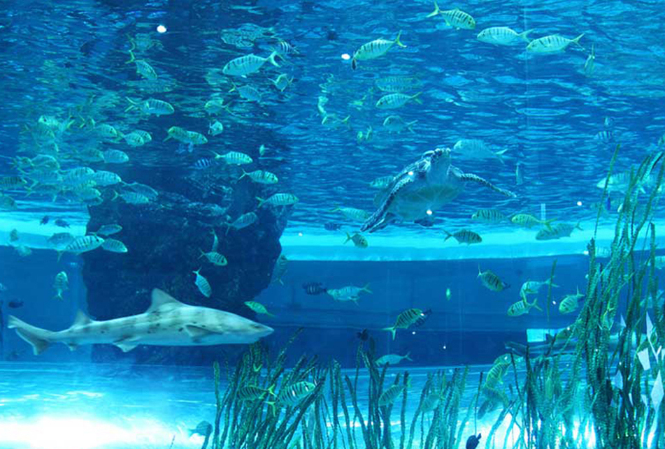

FOLLOW US
Journal of Ocean & Culture
관람정보
전시
교육·문화
소장품
학술연구
발간자료
KNMM
기획전시
교육문화
주요소장품
알림
관람안내
▲TOP
관람정보
관람안내
박물관 일정
오시는길
오시는길
주차안내
관람예약
전시해설
단체관람
해양도서관
4D영상관
시설안내
전체안내
층별안내
편의시설안내
시설대관
자주하는 질문
전시
기획전시
상설전시
층별전시안내
3층 항해선박
3층 해양역사인물
3층 해양생물
4층 해양산업
4층 해양과학
4층 해양영토
야외전시
전시자료
교육·문화
교육
현재교육
지난교육
어린이박물관
교육자료
교육자료
교육사진관
해양교육문화박람회
어린이 그리고 우리의 바다
온라인 바다 배움관
내가 만드는
해양교육문화박람회
이벤트
현재이벤트
지난이벤트
소장품
소장품 검색
주요 소장자료
소장자료 검색
지정문화재
소장품 이야기
소장자료 3D보기
소장자료 이야기
기증
기증안내 및 예우
기증현황
소장자료 관리
수장고 현황
보존관학동 현황
열람·복제
열람·복제 안내 및 신청
학술연구
학술행사
발간총서
KNMM
인사말
인사말·기고문
조직 및 업무
KNMM소개
연혁 및 현황·시설소개
박물관MI·홍보영상
홍보자료
알림
공지사항·채용공고
언론/보도자료
영상/카드뉴스
포토갤러리·사회공헌
1:1문의
관람후기
부조리신고센터
고객현장
고객현장·인권경영헌장
자원봉사안내
정보공개
정보공개제도안내
정보공개개요
정보공개방법
비공개정보 세부기준
불복구제 절차
정보공개관련 법규
정보공개관련 서식
정보공개수수료
사전정보공개
사전정보공표목록
제목별공표목록
정보목록
정보공개청구신청
공공데이터개방
사업실명제
사업실명제 개요
선정기준 및 현황
대상사업리스트
이용약관
이용약관
개인정보처리방침
영상정보처리기기운영·관리방침
이메일무단수집거부
저작권정책
KNMM
국립해양박물관의 문은
언제나 바다로
Korea National Martime Museum
About KNMM
소장품
해주항아리(海州壺)
Blue and White Pocelain Jar Originated from Haeju
View Collection
교육·문화
해양교육문화박람회
우리가 꿈꾸는 바다를 온라인으로 즐겨요.
해양교육문화박람회
3층 상설전시
해양생물
생명이 역동하는 광활한 바다
자세히보기

3층 상설전시
해양문화
바다에서의 삶
자세히보기
3층 상설전시
항해선박
선조들의 기술과 해양력
자세히보기
해양교육문화박람회
내가 만드는
해양교육문화박람회
2020.06.26(금)~08.03(월) 18:00까지
누구나 응모 가능
자세히보기
해양교육문화박람회
어린이 그리고
우리의 바다 그림 전시
생명의 바다 그림대회와 등대 사랑 그림그리기 대회
수상작을 만나보세요!
자세히보기
해양교육문화박람회
온라인 바다 배움관
바다와 관련된 소중한 문화 유산을 종이접기와
만들기를 통해 이해하고 알아보아요!
자세히보기
교육
온라인 교육자료실
바다의 역사와 문화에 관한 다양한 교육자료를
제공합니다
자세히보기
교육
어린이박물관
바다와 환경에 대한 어린이 체험형 전시
자세히보기